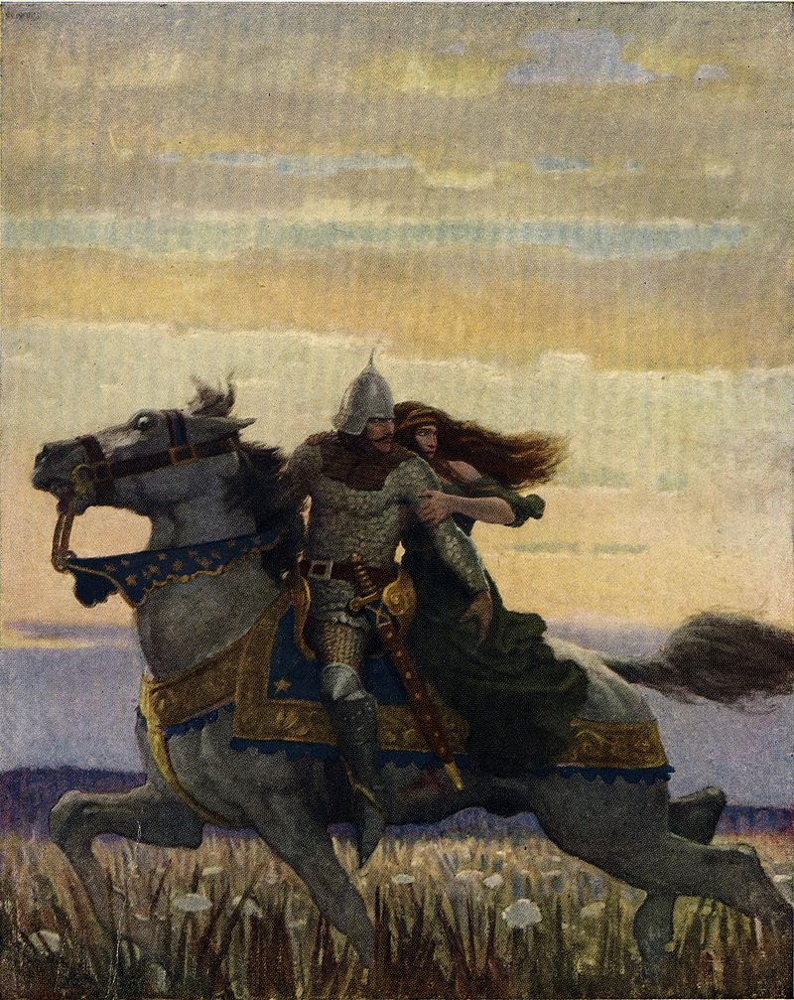

Lancelot del Lago, también llamado Lanzarote en español, es uno de los caballeros de la Mesa Redonda, perteneciente al conjunto de leyendas artúricas.
Era el más fiel de los caballeros del Rey Arturo y jugó un papel importante en muchas de las victorias de Arturo. Lancelot es conocido principalmente por su historia de amor con la reina Ginebra, la esposa de Arturo, y el papel que desempeñó en la búsqueda del Santo Grial. También es conocido por ser el amigo más fiel del sobrino de Arturo, Gawain. Su primera aparición como un personaje principal está en Lancelot el Caballero de la Carreta, o Lancelot en prosa, que fue escrito en el siglo XII.
Origenes
Los orígenes literarios de Lancelot son de una historia olvidada del pasado. Antes de su aparición en la obra de El caballero de la carreta, Lancelot es prácticamente desconocido. El académico Roger Sherman Loomis sugiere que Lancelot se relaciona con el héroe galés Llwch Llenlleawg de Culhwch y Olwen.